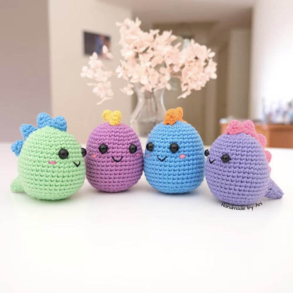
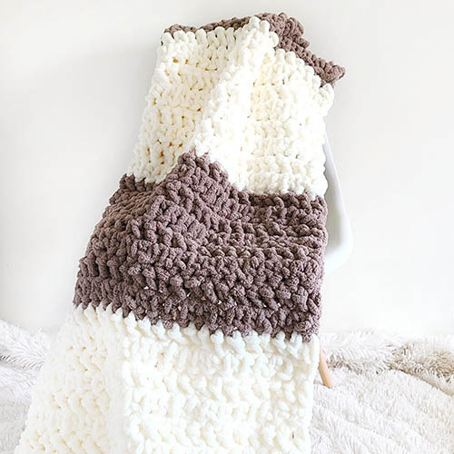
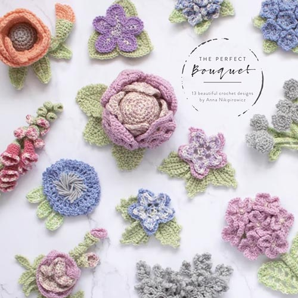
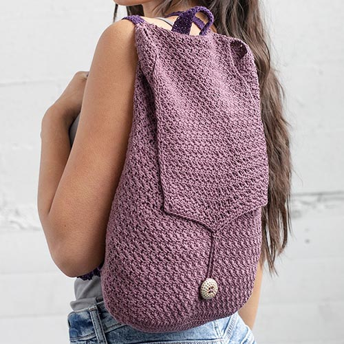
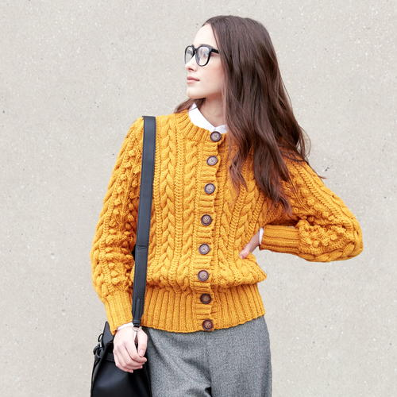
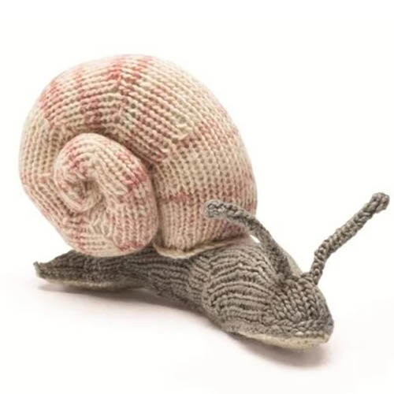
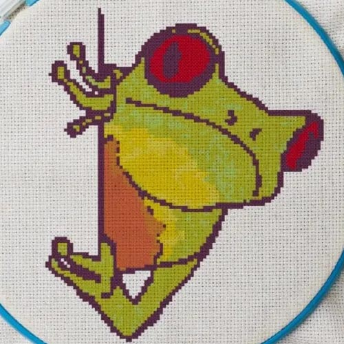
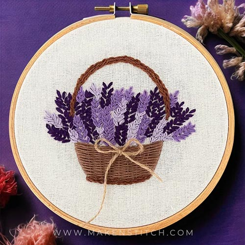

Crochet Patterns

Colourful Mini Dino
Difficulty: Beginner
Yarn Weight: DK
Hook Size: 4.5 - 5.5mm

Crochet Weighted Blanket
Difficulty: Beginner
Yarn Weight: Jumbo
Hook Size: 16mm

Crochet Flower Collection
Difficulty: Intermediate
Yarn Weight: Worsted
Hook Size: 5 - 6.5mm

Tidal Mini Backpack
Difficulty: Intermediate
Yarn Weight: Lace
Hook Size: 3.5mm
Knitting Patterns

Cable Knit Cardigan
Stitch Gauge: 20 stitches per 4 inches
Yarn Weight: Worsted
Needle Size: 4 -4.5mm

Snail
Stitch Gauge: N/A
Yarn Weight: DK
Needle Size: 3.25mm
Embroidery Patterns

Frog Cross Stitch
Difficulty: Beginner
Size of Finished Piece: approx. 16.5x20cm
Number of Colours: 8

Lavender Embroidery
Difficulty: Intermediate
Size of Finished Piece: approx. 12.5x11cm
Number of Colours: 5